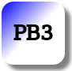

MBLogic
for an open world in automation
MBLogic
for an open world in automation
Help - HMI Visual Effects
Overview:
Numerous visual effects are possible using SVG and CSS. This section describes how some of these work. This techniques can also be applied to other images if desired.
Push Button Colours and Gradients:


The push buttons in the examples shown here use colour gradients and drop shadows to give a 3-D effect to their appearance. These effects are not required for their function. However, their appearance does help to distinguish them from other items so the operator knows they are actually buttons. The use of colour gradients and drop shadows requires that certain definitions be created. These definitions can be shared amongst other buttons of the same colour.
The button colour is determined by selecting the appropriate "id" and using it as the "fill" property.
SVG
<!-- These are some definitions which are used below. --> <defs> <!-- These apply a linear colour gradient across the buttons. More colours can be added as needed. They only apply to the current SVG section, and so have to be repeated if we need them elsewhere. --> <!-- Red gradients. --> <linearGradient id="MB_RedGradient" x1="1" y1="1" x2="0" y2="0"> <stop offset="50%" stop-color="red" /> <stop offset="100%" stop-color="white" /> </linearGradient> <!-- Yellow gradients. --> <linearGradient id="MB_YellowGradient" x1="1" y1="1" x2="0" y2="0"> <stop offset="50%" stop-color="yellow" /> <stop offset="100%" stop-color="white" /> </linearGradient> <!-- Orange gradients. --> <linearGradient id="MB_OrangeGradient" x1="1" y1="1" x2="0" y2="0"> <stop offset="50%" stop-color="orange" /> <stop offset="100%" stop-color="white" /> </linearGradient> <!-- Green Gradients. --> <linearGradient id="MB_GreenGradient" x1="1" y1="1" x2="0" y2="0"> <stop offset="50%" stop-color="green" /> <stop offset="100%" stop-color="white" /> </linearGradient> <!-- Blue gradients. --> <linearGradient id="MB_BlueGradient" x1="1" y1="1" x2="0" y2="0"> <stop offset="50%" stop-color="blue" /> <stop offset="100%" stop-color="white" /> </linearGradient> <!-- Violet gradients. --> <linearGradient id="MB_VioletGradient" x1="1" y1="1" x2="0" y2="0"> <stop offset="50%" stop-color="violet" /> <stop offset="100%" stop-color="white" /> </linearGradient> <!-- Indigo Gradients. --> <linearGradient id="MB_IndigoGradient" x1="1" y1="1" x2="0" y2="0"> <stop offset="50%" stop-color="indigo" /> <stop offset="100%" stop-color="white" /> </linearGradient> <!-- Grey Gradients. --> <linearGradient id="MB_GreyGradient" x1="1" y1="1" x2="0" y2="0"> <stop offset="50%" stop-color="grey" /> <stop offset="100%" stop-color="white" /> </linearGradient> <!-- Black Gradients. --> <linearGradient id="MB_BlackGradient" x1="1" y1="1" x2="0" y2="0"> <stop offset="50%" stop-color="black" /> <stop offset="100%" stop-color="white" /> </linearGradient> <linearGradient id="MB_SilverGradient" x1="1" y1="1" x2="0" y2="0"> <stop offset="50%" stop-color="silver" /> <stop offset="100%" stop-color="white" /> </linearGradient> <!-- The following filter is used to add a drop shadown. --> <filter id="MB_DropShadowFilter"> <feGaussianBlur stdDeviation="2"> </feGaussianBlur> </filter> </defs>
Push Button Animation Using CSS:
Another visual effect used is to "animate" the button using CSS (Cascading Style Sheets). CSS is a standard web technology which is used to apply common styles to web pages. The style is applied to each button by enclosing it in a group with the class class="svgbuttondef". A "class" is used for style rather than "id" due to the rules of CSS. This however does allow both an "id" and a "class" to be assigned to the same thing.
This produces two effects. The "stroke" (border) of the button turns white when clicked. This is applied by the "active" CSS propery (stroke: white;). The other effect is for the border to widens slightly when the mouse passes over it. This is applied by the "hover" property (stroke-width is changed from 5 to 7).
The following shows a push button in the normal state, and when activated.


Different types of buttons may need slightly different styles in order to adjust the stroke width to the characteristics of the button. Using CSS is the recommended method for providing push button feedback.
/* The following style is used to animate SVG push buttons. It causes the
outline (stroke) of the button to reverse when activated. */
/* Regular push buttons. */
.buttonactivate {
stroke: black;
stroke-width: 5px;
}
.buttonactivate:hover {
stroke: black;
stroke-width: 7px;
}
.buttonactivate:active {
stroke: white;
stroke-width: 5px;
}
/* Selector switches. */
.sswitchactivate {
stroke: black;
stroke-width: 2px;
}
.sswitchactivate:hover {
stroke: black;
stroke-width: 3px;
}
.sswitchactivate:active {
stroke: white;
stroke-width: 4px;
}
/* Small triangular buttons. */
.tributton {
stroke: black;
}
.tributton:hover {
stroke: black;
}
.tributton:active {
stroke: white;
}
Push Button Animation Using Javascript:

Animating the push buttons using CSS is simple and effective. If however it is desired to apply a different effect, it is possible to alter push button properties using Javascript.
The following example is not explained in detail. However, a Javascript HMI library function is used to reverse the colour gradients (linerGradient) when the mouse button is pressed or released.
<!-- We group a pilot light and push button so we
can move them around together . -->
<g transform="translate(835,310)">
<!-- This shows a octagonal pilot light. -->
<g id="PL3">
<use xlink:href="#MB_PilotLightOctagonal" />
</g>
<!-- This applies a linear colour gradient across the button.
We need to manipulate this gradient for what we are doing
here, so this button needs its own gradient. -->
<linearGradient id="PB3Gradient" x1="1" y1="1" x2="0" y2="0">
<stop id="PB3Gradient1" offset="50%" stop-color="blue" />
<stop id="PB3Gradient2" offset="100%" stop-color="white" />
</linearGradient>
<!-- This also shows a maintained push button. However, this version uses
Javascript to animate the button instead of CSS. -->
<g transform="translate(100,0)" fill="url(#PB3Gradient)"
onmousedown="MBHMIProtocol.WriteToggleImmediate('PB3', 'PL3');
PB3svg.ButtonPressed();"
onmouseup="PB3svg.ButtonReleased();"
onmouseout="PB3svg.ButtonReleased();">
<!-- This is the actual button. -->
<use xlink:href="#MB_SquarePB" />
<!-- This is the text label. -->
<text x="0" y="8" font-size="24" stroke-width="2px"
stroke="black" fill="black"
text-anchor="middle">PB3</text>
</g>
</g>
Javascript
This shows how the button gradient is animated using Javascript.
// This demonstrates using Javascript to give operator feedback when // pressing a push button. This is an alternative to using CSS. var PB3svg = new MB_SVGPushButton(document, "PB3Gradient1", "PB3Gradient2");